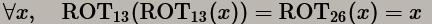
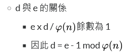
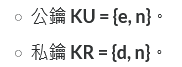
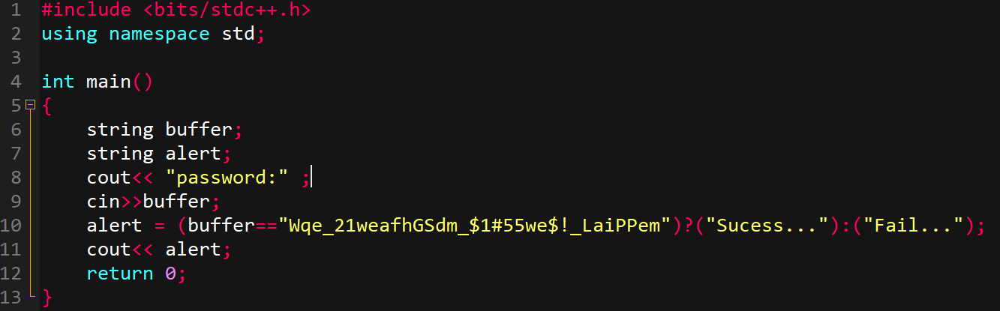

不論在軟體抑或網頁開發，多少都會碰到機密資料的處理。此時，未受加密的原始資料稱為明文(Plain Text)。
資料處理的過程若不加密，而直接傳送處理的話是十分危險的，容易遭攻擊者取得機密資料，進而竄改或進行其他攻擊。
傳遞過程經過加密程序的文本稱為密文(Cipher Text)。
經過加密算法產生金鑰(Key)，又分為對稱(A Public Key)與非對稱金鑰(A Public Key & A Private Key)之差別。
下面為簡易加密模擬，使用⊕(xor)的可逆特性：
Simulation
Plain text:
Plain text ⊕ KEY = Cipher text
Plain text
⊕ KEY =
Cipher text
Cipher text:


Simulation
Enter your string:
Result: :
Ref: [3]
選出兩個較大的質數 p 和 q
計算兩個質數的乘積 n = p × q
計算出小於 n 且與 n 互質的整數個數
φ (n)= (p - 1)(q - 1)
選出一個整數 e
（拿來當做公鑰)
計算 d (私鑰)
可得

Simulation
Enter your a>0 prime number P:
Enter your a>0 prime number Q:
⇩ 如下開始模擬RSA金鑰的產生過程 ⇩
Plain Text:
Cipher Text:

別把任何機密資用明文方式傳送，就算是source code亦同。
在一般使用 C 或 C++ 等語言編成的程式在使用到固定大小的緩衝區進行資料存取時並不會自己進行緩衝區邊界的檢查，在一般正常使用情況，輸入值（Input data）會小於緩衝區的大小（Buffer size）。
若程式設計者在設計讀取輸入值至緩衝區時也忽略了檢查輸入值長度時，攻擊者就可以透過輸入一筆較長的資料，以造成程式癱瘓或改變執行流程，通常會搭配 Shellcode 可以執行任意程式碼，而且同時擁有受害程式的權限。
如上圖所示，當輸入值過長且又沒去檢查是否超過緩衝區長度時，則會使得輸入值覆寫掉一些存在 stack 中的訊息，如圖中的 Return address，當這個存放程式 Call back 位址的 Return address 被修改後，將可能因為寫入的值而導致系統癱瘓或被導向攻擊者寫入 Shellcode 的位址
如上圖所示，當輸入值過長且又沒去檢查是否超過緩衝區長度時， 則會使得輸入值覆寫掉一些存在 stack 中的訊息，如圖中的 Return address， 當這個存放程式 Call back 位址的 Return address 被修改後， 將可能因為寫入的值而導致系統癱瘓或被導向攻擊者寫入 Shellcode 的位址
最簡單的例子就是函式 strcpy（est ，src），因其不檢查輸入長度，所以很容易造成緩衝區溢位，
不過現在程式設計師都會以 strncpy 取而代之。
假設此時宣告 char buffer［24］，再呼叫 strcpy（Buffer，Input），當 Input 大於 24 就有機會覆寫到
原 Stack 中所存放的值，包含暫存器 EIP、EBP 等，就會影響到 Return address 而改變程式執行流程。
我們可以透過 Ollydbg 等 Debugger 觀察程式的執行流程、暫存器值和 Stack 內容，如下圖可以看到在經過
strcpy 輸入一長串 Input data 後，將造成不可預期的影響。
而 Shellcode 就是一堆十六進位的代碼組合而成，可以直接被 CPU 辨識執行， 通常會透過 Buffer Overflow 改變程式執行流程到攻擊者存放在記憶體的 Shellcode， 就可以為所欲為了，像是透過下面的程式碼以 xor 計算去改變 EBP 的值。